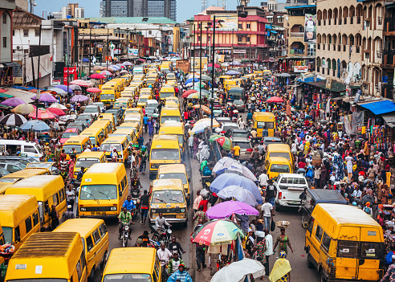
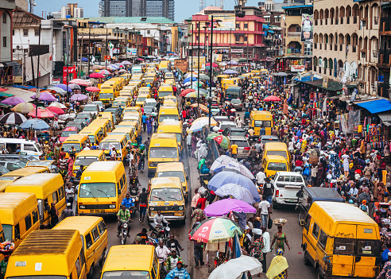
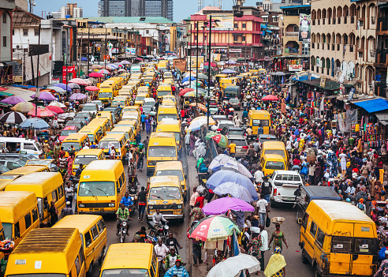

Here we learn more about a beautiful African Nation,her troubles, her ongoing wars against certian policies,people
, government and how she and her people are standing thier ground in hopes for a greater future and a greater world

About My Topic
This website is meant to touch on mutiple topics which are facing Nigeria as a country , we are going to slide
through the list below
Corruption
Bad Governance
Unemployment
Lack of Quality Education
Poverty
Corruption
We would be first talking about Corruption.Nigeria as a country has always had corruption emvbedded in it parts,
straight from the highest point in it goverment officaisl who praacitce election rigging and disrutption to its task
force who induldge in taking in of bribery and wrongful arreest to even its people who volounteer to be instruments
of destruction for the goverment officials.
Data about my topic
As time goes,we have dicoved that there are mutiple people who have authorititiy or people in power who have all
fallen in the trap of been corrupt
Corrupt officals trys to escape charges by fake fainting
Nigeria Corruption Index -2022 Data - 2023 Forcast
The Corruption Perceptions Index ranks countries and territories based on how corrupt their public sector is
perceived to be. A country or territory’s score indicates the perceived level of public sector corruption on a scale
of 0 (highly corrupt) to 100 (very clean).Nigeria scored 24 points out of 100 on the 2022 Corruption Perceptions
Index reported by Transparency International
The OPL 245 Scandal, also known as the Malabu Oil Scandal, is one of the biggest corruption scandals in Nigeria's history. In 1998, the Nigerian government awarded the rights to explore OPL 245, one of the country's richest oil blocks, to a company called Malabu Oil and Gas. However, it later emerged that Malabu was controlled by former oil minister Dan Etete, who had awarded himself the rights while he was in office. The scandal involved a complex web of bribery, kickbacks, and shell companies, and several high-profile individuals and corporations were implicated, including former President Goodluck Jonathan, Shell, and Eni. The OPL 245 scandal has had lasting effects on Nigeria's oil sector, as it has highlighted the extent of corruption and lack of transparency in the industry, and has led to calls for greater accountability and reform.
Pension Scam
The Nigerian pension scam is another example of how corruption has had lasting effects in the country. The scam, which involved the diversion of over N195 billion ($510 million) of pension funds by public officials and their accomplices, was uncovered in 2010. The funds were meant for retired civil servants, but were instead siphoned off by government officials and used to buy luxury properties, cars, and other assets. The pension scam has had lasting effects on Nigeria's pension system, as it has undermined public confidence in the system and made it more difficult for retired civil servants to access their entitlements
Lagos- Ibadan Expressway
The Lagos-Ibadan Expressway is one of Nigeria's most important road networks, connecting Lagos, the country's economic hub, to other parts of the country. However, the road has been in a state of disrepair for many years, with potholes, erosion, and congestion causing major delays and accidents. The poor state of the road has been attributed to corruption and mismanagement, as funds allocated for its repair and maintenance have been embezzled by government officials and contractors. The lasting effects of corruption on the Lagos-Ibadan Expressway are evident in the daily struggles of commuters and motorists who use the road, as well as the economic impact on businesses that rely on the road for transportation of goods and services.
.jpg) 
